PREAn Art PortfolioFor Architecture Schools
In 1985...I needed to create an "Artist's Portfolio" for applications to architecture schools. Most of the drawings and artwork I had at that time were hard-lined technical drawings typical of what a draftsman might produce...+ with basic floor plans, exterior views and Section cuts of buildings.
"TECHNICAL DRAWINGS"


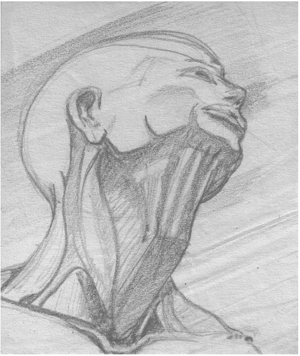


I also explored a technique called..."Gesture Sketches"...very quick drawings intended to capture the "GESTALT" or "FEELING" or a subject
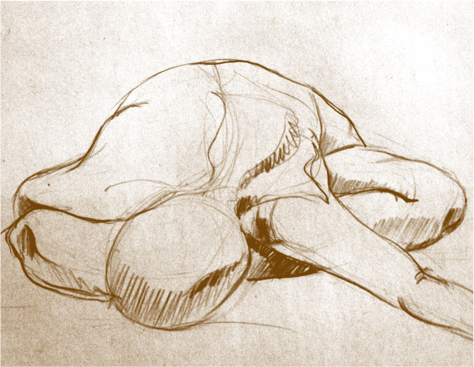
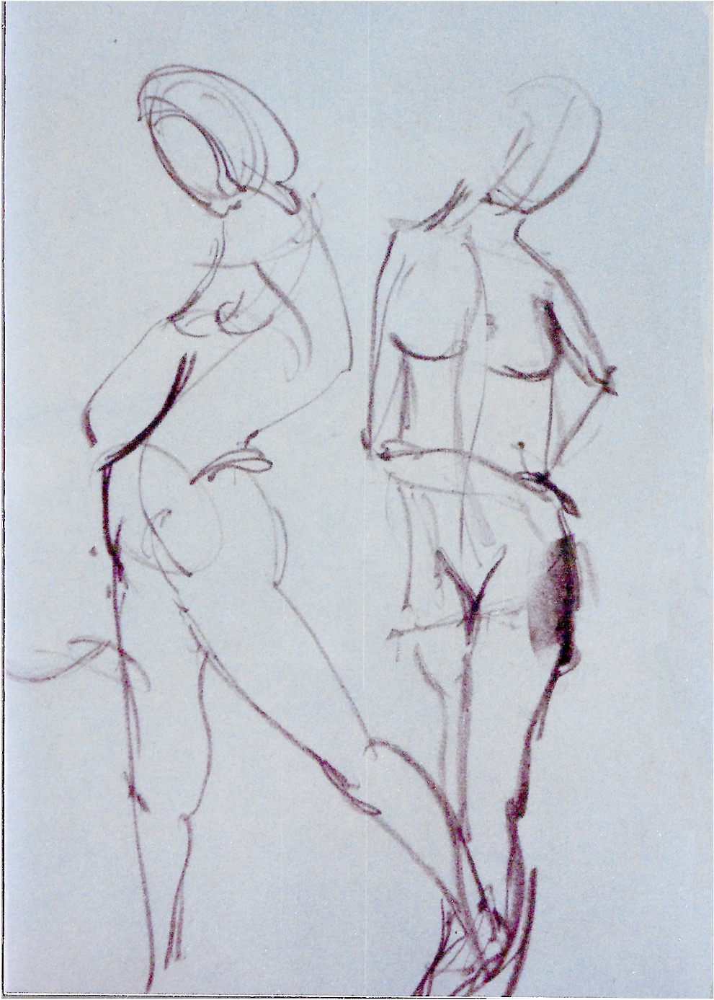
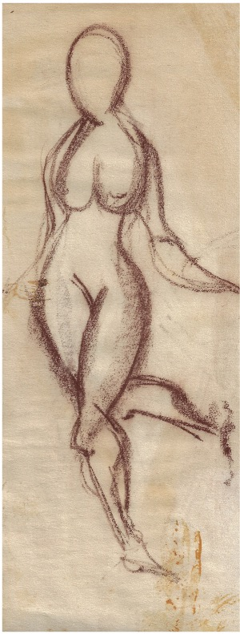
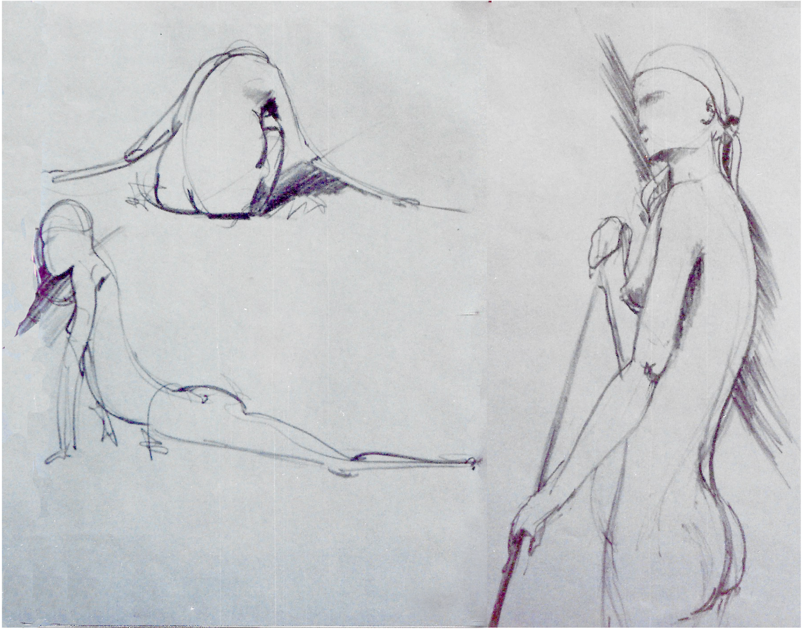
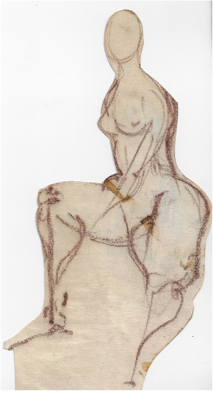
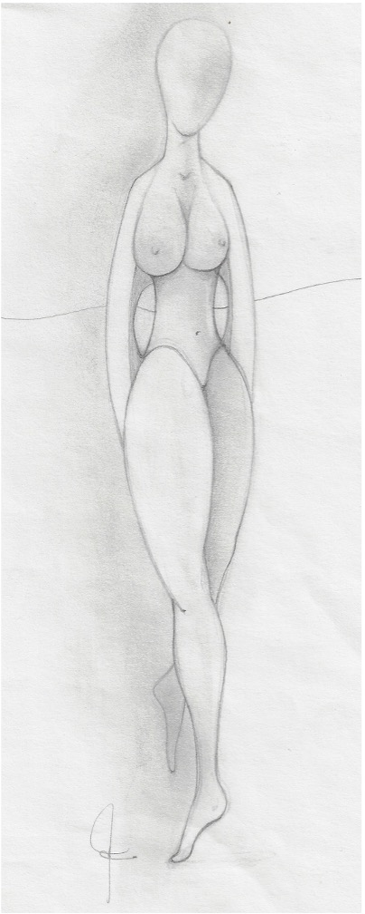

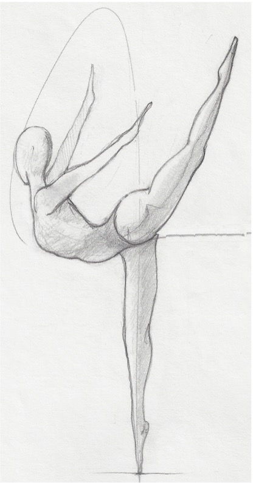
Meditation & Sketching
I had been practicing Transcendental Meditation since 1970, and would usually draw after a meditation session. It became an integral part of my practice of "Open Mind Sketching".
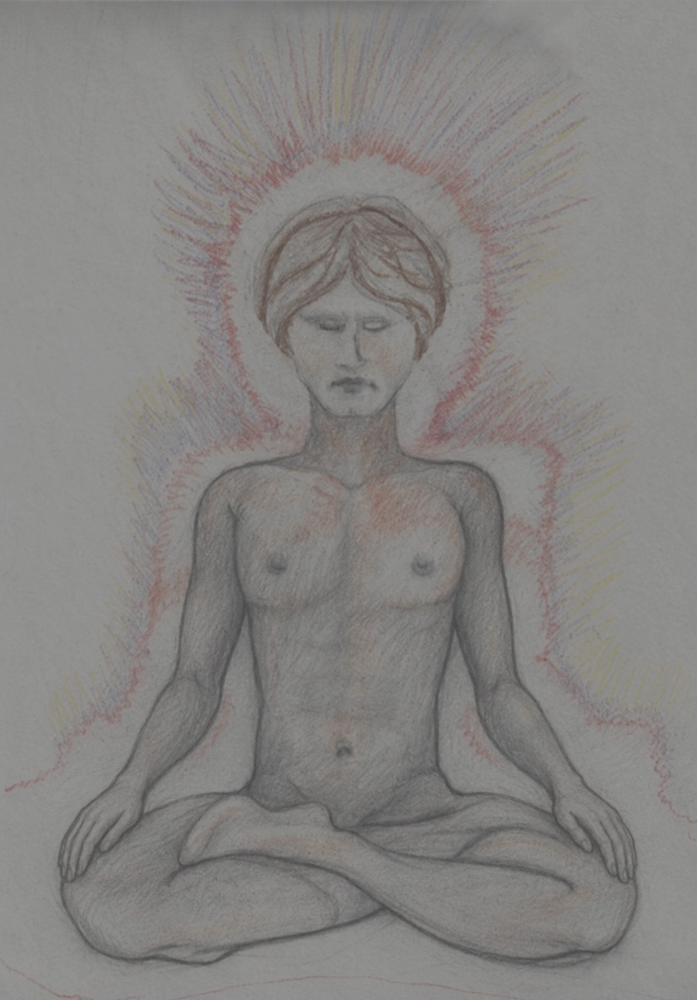
As the deadline approached I decided to increase my meditations from 15-30 Minutes a day...
up to 2-3 hours.
I thought this might increase my creativity and intuition. After a month of these extended sessions my meditation experience changed significantly. I would often find my self in an absolutely STILL mind-space of a silent vast void with a new kind of awareness....
I was witnessing my thoughts and my mind from some place other than my normal place of consciousness.
...And then I became aware that
ORB of energy
had emerged over my head
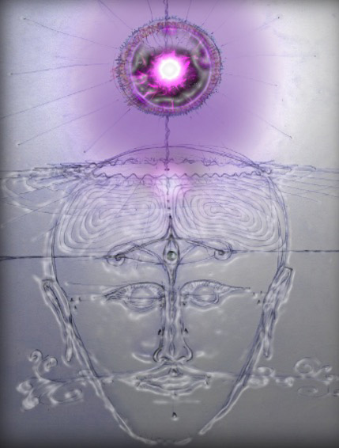
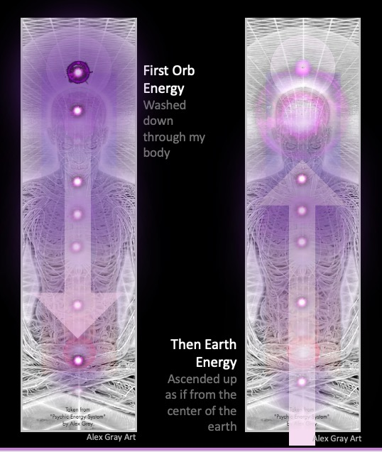
... A short time later energy entered my feet and rose up through my back
The energy seemed to come from the earth. I was filled with energy throughout my body for 3 days and 2 nights, non-stop. I felt "Electrified"
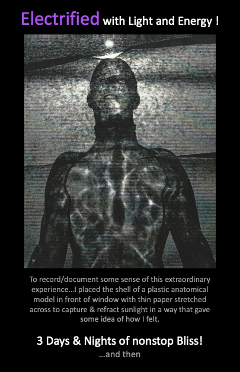
But Then...
after 4 days of virtually no sleep and a mind that felt like it was on fire, I admitted myself, with my concerned wife's help, into the local hospital.